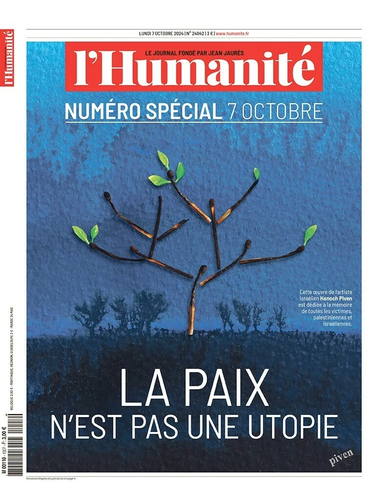

Publication sur X
« La paix n’est pas une utopie ». Un numéro spécial de L’Humanité
Date de publication sur X · 7 octobre 2024
Texte de la publication sur X
Numéro spécial de l'Humanité de 32 pages pour comprendre et espérer. En vente jusqu'au 13 octobre au prix de 3 euros. https://t.co/nJcCZF4fai

Sources
PCF 79 · @79Parti sur X · AR-0005-TW-1843310980589301833
À lire aussi · Le PCF dénonce le rôle de l’OTAN